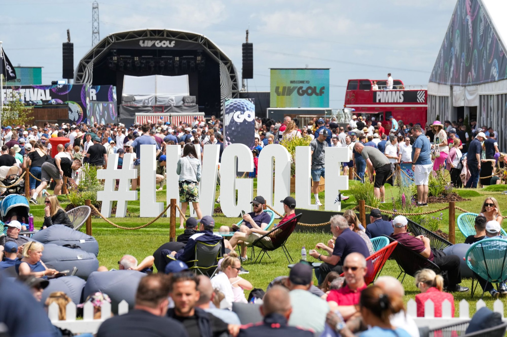
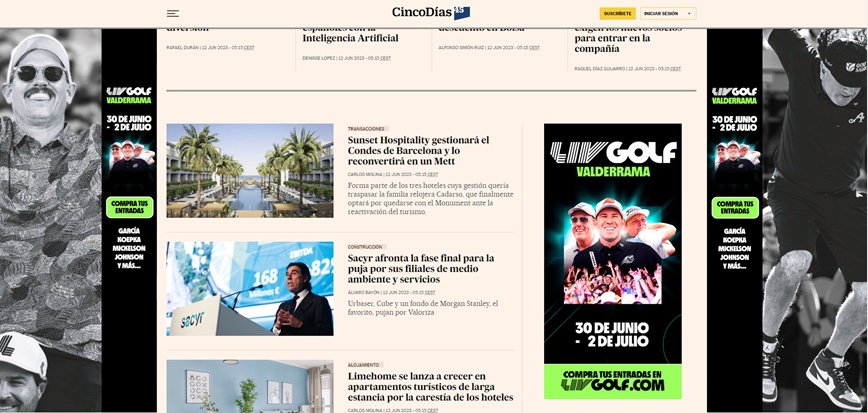
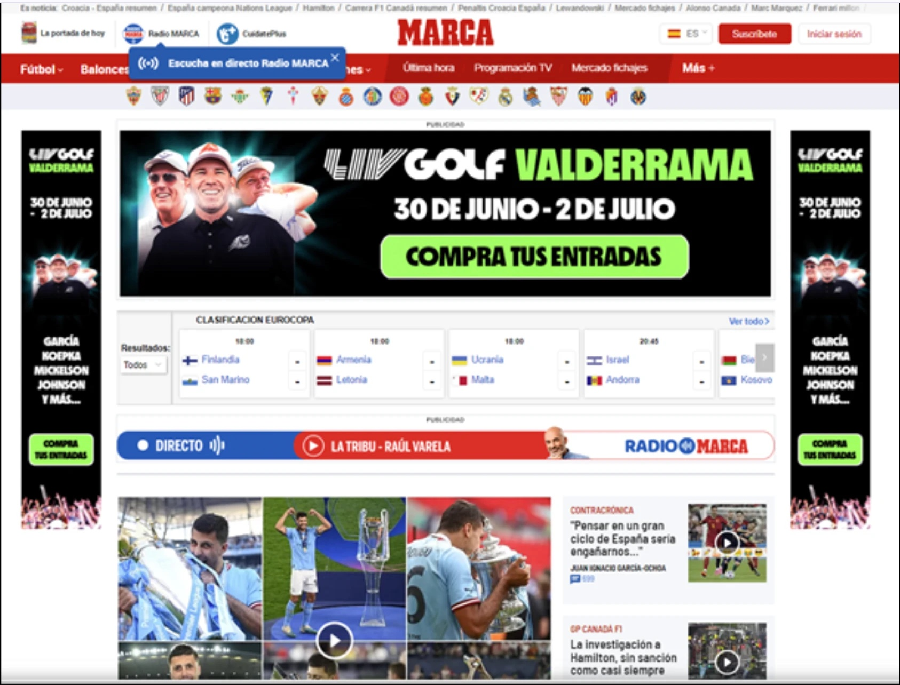
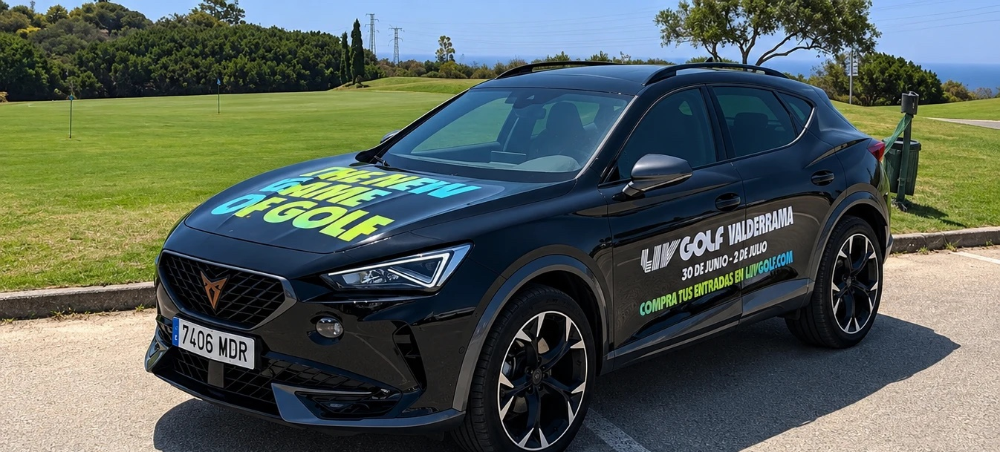
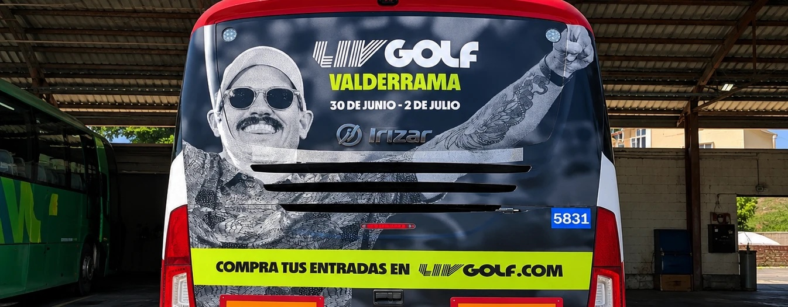
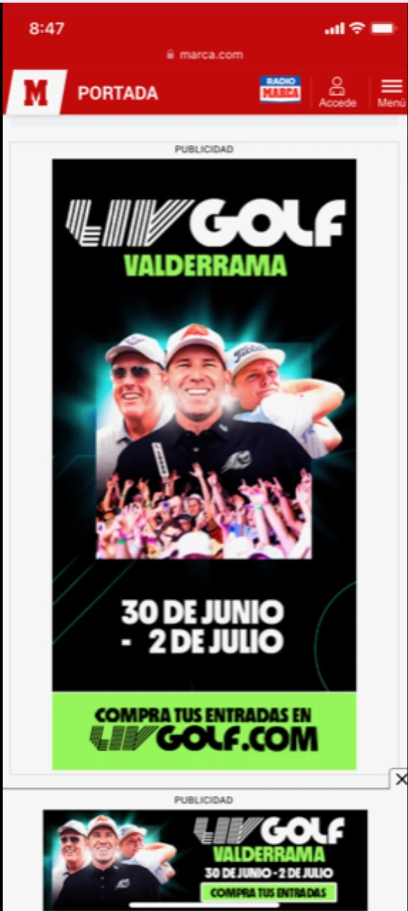
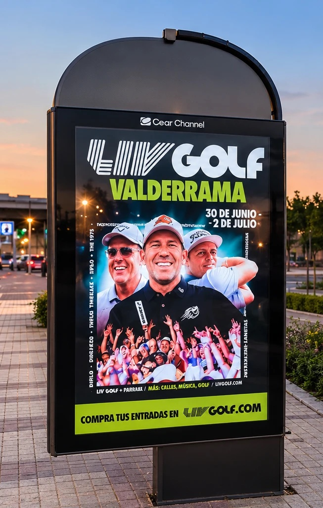
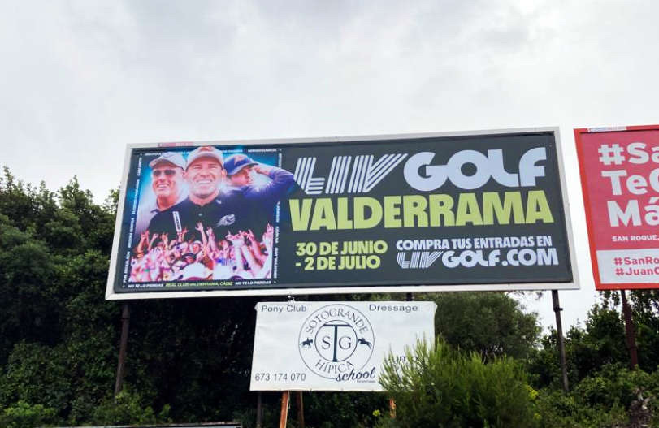
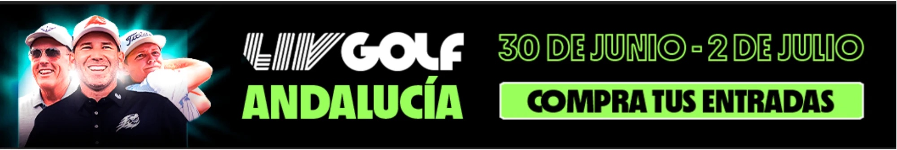

Adaptaciones
+200 adaptaciones de campaña
Todas las adaptaciones de marca del evento.
OnlinePrensaExteriorVehículos
ProyectosLIV Golf Valderrama
Campañas y diseño gráfico
La llegada de LIV Golf a España, en el Real Club Valderrama (Cádiz). Más de 200 adaptaciones de una misma campaña: de los banners a las vallas, los mupis y los vehículos rotulados.

LIV Golf Andalucía fue el primer evento del circuito en España y se celebró en el Real Club Valderrama del 30 de junio al 2 de julio. Me encargué de todas las adaptaciones de marca del evento, en coordinación con el equipo de diseño americano: más de 200 adaptaciones de campaña, entre banners y el resto de soportes.
Objetivos
Adaptar una misma campaña a más de 200 piezas y soportes.
Que el concepto funcione igual de bien online y offline.
Respetar siempre las reglas de la marca y los tiempos de cada medio.
Todas las adaptaciones de marca del evento.
El reto estaba en la escala: un mismo concepto tenía que funcionar igual de bien en publicidad online y offline: prensa, vallas, mupis y marquesinas, y también en vehículos y autobuses, que vinilamos con la campaña. Todo respetando siempre las reglas de la marca y los tiempos de cada medio.









Una misma identidad llevada a pantallas, calles y periódicos.
Todas las adaptaciones de marca del evento.
De los mupis digitales a las pantallas LED del aeropuerto.
Del faldón a la portada, en distintos formatos de papel.
Presencia en medios regionales, deportivos y de golf.